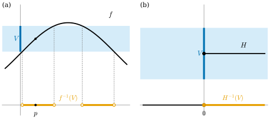
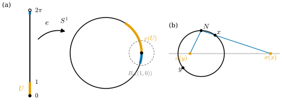

3.2 연속사상과 위상동형사상
이 절의 목표
- 연속사상을 열린집합의 역상으로 정의하고, 거리공간에서는 이것이 \(\varepsilon\)-\(\delta\) 연속과 같음을 증명할 수 있다.
- 역상을 이용해 \(S^n\), \(\GL(n, \R)\) 같은 집합이 열려 있는지 닫혀 있는지 곧바로 판정할 수 있다.
- 위상동형사상을 정의하고, 연속 전단사가 위상동형사상이 아닐 수 있음을 예로 보일 수 있다.
- 열린공과 \(\R^n\), 구면에서 한 점을 뺀 것과 \(\R^n\)이 위상동형임을 식으로 확인할 수 있다.
선수 지식
- 정의 3.1.11 (위상공간, 근방), 정의 3.1.15 (닫힌집합과 폐포), 명제 3.1.17 (폐포의 점)
- 정의 3.1.5 (열린공), 보조정리 3.1.6, 예 3.1.26 (\(\R^n\)의 세 거리), 예 3.1.4 (부분집합의 거리)
- 명제 1.2.12 (역사상과 좌표사상), 명제 1.2.14 (행렬 표현)
- 역상 \(f^{-1}(B) = \{x : f(x) \in B\}\)은 합집합, 교집합, 여집합과 바꿀 수 있다: \(f^{-1}(\bigcup_\alpha B_\alpha) = \bigcup_\alpha f^{-1}(B_\alpha)\), \(f^{-1}(\bigcap_\alpha B_\alpha) = \bigcap_\alpha f^{-1}(B_\alpha)\), \(f^{-1}(Y \setminus B) = X \setminus f^{-1}(B)\). (상 \(f(A)\)은 교집합과 여집합에 대해 이런 성질이 없다.)
동기
3.1절에서 거리 없이 열린집합을 말하는 언어, 즉 위상을 만들었다. 이제 두 위상공간 사이의 사상 가운데 “가까움을 보존하는” 사상, 즉 연속사상을 정의하자. 미적분학의 정의는 “\(f(x)\)를 \(f(p)\)에 \(\varepsilon\)만큼 가깝게 하려면 \(x\)를 \(p\)에 \(\delta\)만큼 가깝게 하면 된다”였다. 공의 언어로 옮기면 \(f(B_\delta(p)) \subseteq B_\varepsilon(f(p))\), 즉 \(B_\delta(p) \subseteq f^{-1}(B_\varepsilon(f(p)))\)이다. 이것은 “\(f(p)\) 둘레의 공의 역상이 \(p\) 둘레의 공을 품는다”는 말이고, 모든 점에서 이것이 성립한다는 것은 결국 “열린집합의 역상이 열린집합”이라는 말이 된다. 이렇게 쓰면 거리가 사라진다.

연속사상
정의 3.2.1 (연속사상, continuous map). \(X\)와 \(Y\)가 위상공간이라 하자. 사상 \(f\colon X \to Y\)가 다음 조건을 만족하면 연속(continuous)이라 하고, \(f\)를 연속사상(continuous map)이라 한다.
- \(Y\)의 모든 열린집합 \(V\)에 대하여 \(f^{-1}(V)\)가 \(X\)의 열린집합이다.
정의는 “역상”으로 되어 있다. “열린집합의 상이 열린집합”이 아니다(아래의 열린사상과 비교). 정의가 전역적인 문장이라 한 점에서의 행동을 보기 어려울 것 같지만, 다음 명제가 점별 판정을 준다.
명제 3.2.2 (연속의 점별 판정). 사상 \(f\colon X \to Y\)가 연속일 필요충분조건은 다음이다.
- 모든 \(p \in X\)와 \(f(p)\)의 모든 근방 \(V\)에 대하여, \(f(U) \subseteq V\)인 \(p\)의 근방 \(U\)가 존재한다.
증명 아이디어: 연속이면 \(U = f^{-1}(V)\)로 잡으면 된다. 거꾸로 점별 조건이 있으면 \(f^{-1}(V)\)의 각 점이 \(f^{-1}(V)\) 안의 근방을 가지므로 \(f^{-1}(V)\)는 그 근방들의 합집합이다.
증명. (\(\Rightarrow\)) \(f\)가 연속이고 \(V\)가 \(f(p)\)의 근방이면 \(U = f^{-1}(V)\)는 열린집합이고 \(p\)를 포함하므로 \(p\)의 근방이며, \(f(U) \subseteq V\)이다.
(\(\Leftarrow\)) \(V \subseteq Y\)가 열린집합이라 하자. 각 \(p \in f^{-1}(V)\)에서 \(V\)는 \(f(p)\)의 근방이므로 가정에 의해 \(f(U_p) \subseteq V\)인 \(p\)의 근방 \(U_p\)가 있고, \(f(U_p) \subseteq V\)는 \(U_p \subseteq f^{-1}(V)\)와 같은 말이다. 따라서 \(f^{-1}(V) = \bigcup_{p \in f^{-1}(V)} U_p\)이다(명제 3.1.21의 증명과 같은 논법). 열린집합의 합집합이므로 \(f^{-1}(V)\)는 열린집합이다. (\(f^{-1}(V) = \varnothing\)이면 그 자체로 열린집합이다.)
명제 3.2.3 (거리공간에서의 연속). \((X, d_X)\)와 \((Y, d_Y)\)가 거리공간이고 각각 거리 위상을 준다고 하자. \(f\colon X \to Y\)가 연속일 필요충분조건은 다음이다.
- 모든 \(p \in X\)와 모든 \(\varepsilon \gt 0\)에 대하여 어떤 \(\delta \gt 0\)이 존재하여, \(d_X(x, p) \lt \delta\)이면 \(d_Y(f(x), f(p)) \lt \varepsilon\)이다. 즉 \(f(B_\delta(p)) \subseteq B_\varepsilon(f(p))\)이다.
증명. (\(\Rightarrow\)) \(B_\varepsilon(f(p))\)는 \(f(p)\)의 근방이다(보조정리 3.1.6). 명제 3.2.2에서 \(f(U) \subseteq B_\varepsilon(f(p))\)인 \(p\)의 근방 \(U\)가 있고, \(U\)가 열린집합이므로 \(B_\delta(p) \subseteq U\)인 \(\delta \gt 0\)이 있다. 그러면 \(f(B_\delta(p)) \subseteq f(U) \subseteq B_\varepsilon(f(p))\)이다.
(\(\Leftarrow\)) 명제 3.2.2의 조건을 확인한다. \(V\)가 \(f(p)\)의 근방이면 \(B_\varepsilon(f(p)) \subseteq V\)인 \(\varepsilon \gt 0\)이 있다. 가정의 \(\delta\)로 \(U = B_\delta(p)\)를 잡으면 \(U\)는 \(p\)의 근방이고 \(f(U) \subseteq B_\varepsilon(f(p)) \subseteq V\)이다.
따라서 거리공간 사이에서는 정의 3.2.1이 미적분학의 연속과 같다. 특히 예 3.1.4(a)처럼 부분집합에 거리를 제한하면 다음 두 가지가 곧바로 나온다. (i) \(f\colon X \to Y\)가 연속이고 \(A \subseteq X\)이면 제한 \(f|_A\colon A \to Y\)도 연속이다. \(A\)의 점에 대해서도 같은 \(\delta\)가 통하기 때문이다. (ii) \(f(X) \subseteq B \subseteq Y\)이면, \(f\)를 \(B\)로 가는 사상으로 보아도 연속성이 변하지 않는다. \(B\)의 거리가 \(Y\)의 거리와 같은 값을 주기 때문이다. 부분집합의 위상은 3.3절에서 거리 없이 다시 정의한다.
명제 3.2.4 (합성). \(f\colon X \to Y\)와 \(g\colon Y \to Z\)가 연속이면 \(g \circ f\colon X \to Z\)도 연속이다. 항등사상 \(\id_X\)와 상수사상은 연속이다.
증명. \(W \subseteq Z\)가 열린집합이면 \((g \circ f)^{-1}(W) = f^{-1}(g^{-1}(W))\)이다. \(g\)가 연속이므로 \(g^{-1}(W)\)가 열려 있고, \(f\)가 연속이므로 그 역상도 열려 있다. \(\id_X^{-1}(U) = U\)이다. 상수사상 \(x \mapsto c\)의 역상은 \(V\)가 \(c\)를 포함하면 \(X\), 아니면 \(\varnothing\)이므로 언제나 열려 있다.
\(\R^m\)으로 가는 사상은 성분별로 판정할 수 있다. 여기서 예 3.1.26, 즉 \(\R^m\)의 표준 위상을 정육면체 공 \(B^\infty_r\)로 보아도 된다는 사실을 쓴다.
명제 3.2.5 (성분별 판정). \(X\)가 위상공간이고 \(F = (F^1, \dots, F^m)\colon X \to \R^m\)이라 하자. \(F\)가 연속일 필요충분조건은 각 성분 \(F^i\colon X \to \R\)가 연속인 것이다.
증명. (\(\Rightarrow\)) 사영 \(\mathrm{pr}_i\colon \R^m \to \R\), \(y \mapsto y^i\)는 \(\abs{y^i - z^i} \le \abs{y - z}\)이므로 명제 3.2.3에서 \(\delta = \varepsilon\)으로 연속이다. \(F^i = \mathrm{pr}_i \circ F\)이므로 명제 3.2.4에 의해 연속이다.
(\(\Leftarrow\)) \(V \subseteq \R^m\)이 열린집합이고 \(p \in F^{-1}(V)\)라 하자. 예 3.1.26에 의해 \(V\)는 \(d_\infty\)에 대해서도 열려 있으므로 \(B^\infty_r(F(p)) \subseteq V\)인 \(r \gt 0\)이 있다. 이 정육면체는 \(\prod_i (F^i(p) - r,\ F^i(p) + r)\)이므로
이다. 우변은 열린집합 \(m\)개의 교집합이므로 열린집합이고, \(p\)를 포함하며, \(F^{-1}(V)\)에 포함된다. 따라서 \(F^{-1}(V)\)의 모든 점이 \(F^{-1}(V)\) 안의 근방을 가지므로 \(F^{-1}(V)\)는 열린집합이다(명제 3.2.2의 증명과 같은 논법).
예 3.2.6 (연속함수의 기본 예). (a) 연속인 실함수 \(f, g\colon X \to \R\)의 합 \(f + g\), 곱 \(fg\), 그리고 \(g\)가 \(0\)이 되지 않는 곳에서의 몫 \(f/g\)는 연속이다. 미적분학과 같은 \(\varepsilon\)-\(\delta\) 논증이다. 예를 들어 곱은 \(\abs{f(x)g(x) - f(p)g(p)} \le \abs{f(x)}\,\abs{g(x) - g(p)} + \abs{g(p)}\,\abs{f(x) - f(p)}\)에서 나온다. 좌표함수 \(x \mapsto x^i\)가 연속이므로(명제 3.2.5의 증명), \(\R^n\) 위의 다항식은 모두 연속이고, 분모가 \(0\)이 아닌 곳에서 유리함수도 연속이다.
(b) 선형사상 \(T\colon \R^n \to \R^m\)은 연속이다. 명제 1.2.14에 의해 \(T\)의 성분은 \((Tx)^i = \sum_j A^i_j x^j\)로 좌표함수의 일차결합이고, (a)에 의해 연속이다. 이제 명제 3.2.5를 쓴다.
(c) 노름 \(x \mapsto \abs{x}\)는 \(\R^n\)에서 연속이다. 삼각부등식에서 \(\big\lvert\,\abs{x} - \abs{p}\,\big\rvert \le \abs{x - p}\)이므로 \(\delta = \varepsilon\)이면 된다. 더 일반적으로 거리공간에서 한 점까지의 거리 \(x \mapsto d(x, p)\)는 \(\abs{d(x, p) - d(y, p)} \le d(x, y)\)이므로 연속이다.
역상은 여집합과 바꿀 수 있으므로(선수 지식), 연속성은 닫힌집합으로도 판정된다.
명제 3.2.7. \(f\colon X \to Y\)가 연속일 필요충분조건은 \(Y\)의 모든 닫힌집합 \(C\)에 대하여 \(f^{-1}(C)\)가 \(X\)의 닫힌집합인 것이다.
증명. \(f^{-1}(Y \setminus C) = X \setminus f^{-1}(C)\)이다. 따라서 “\(Y \setminus C\)가 열리면 그 역상이 열린다”와 “\(C\)가 닫히면 그 역상이 닫힌다”는 같은 말이다. \(C\)가 모든 닫힌집합을 움직이면 \(Y \setminus C\)는 모든 열린집합을 움직인다.
예 3.2.8 (역상으로 열린집합과 닫힌집합 만들기). 이 예의 방법이 앞으로 가장 자주 쓰는 판정법이다.
- (a) 단위구면 \(S^n = \{x \in \R^{n+1} : \abs{x} = 1\}\)은 연속함수 \(x \mapsto \abs{x}\)(예 3.2.6(c))에 의한 닫힌집합 \(\{1\}\)의 역상이므로 \(\R^{n+1}\)의 닫힌집합이다.
- (b) \(\{(x^1, x^2) \in \R^2 : x^2 \gt (x^1)^2\}\)은 다항식 \(g(x) = x^2 - (x^1)^2\)에 의한 열린 반직선 \((0, \infty)\)의 역상이므로 열린집합이다. 예 3.1.7(b)처럼 공의 반지름을 직접 찾을 필요가 없다.
- (c) \(n \times n\) 실행렬 전체를 성분을 늘어놓아 \(\R^{n^2}\)으로 본다. 행렬식 \(\det\)은 성분의 다항식이므로 연속이다. 따라서 가역행렬 전체 \(\GL(n, \R) = \det^{-1}(\R \setminus \{0\})\)은 \(\R^{n^2}\)의 열린집합이다.
검증: verify/v-3-2-continuity-homeomorphism.py
비예 3.2.9. (a) 계단함수 \(H\colon \R \to \R\), \(x \lt 0\)이면 \(H(x) = 0\), \(x \ge 0\)이면 \(H(x) = 1\)은 연속이 아니다. \(V = (1/2, 3/2)\)는 열린집합인데 \(H^{-1}(V) = [0, \infty)\)는 열린집합이 아니다(\(0\)을 중심으로 하는 공은 음수를 포함한다)(그림 3.2.1(b)).
(b) 연속성은 두 공간의 위상에 함께 달려 있다. 항등사상 \(\id\colon (\R, \text{표준}) \to (\R, \text{이산})\)은 연속이 아니다. 이산위상에서 \(\{0\}\)은 열려 있지만 그 역상 \(\{0\}\)은 표준 위상에서 열려 있지 않다. 반대 방향 \(\id\colon (\R, \text{이산}) \to (\R, \text{표준})\)은 연속이다. 이산위상에서는 모든 집합이 열려 있기 때문이다.
열린사상과 닫힌사상
연속사상은 열린집합을 열린집합으로 보내지 않을 수 있다. \(x \mapsto x^2\)은 연속이지만 열린구간 \((-1, 1)\)을 \([0, 1)\)로 보낸다. 상의 방향으로 열린집합을 보존하는 성질에는 따로 이름을 붙인다. 이 성질은 3.4절의 몫공간에서 중요하게 쓰인다.
정의 3.2.10 (열린사상과 닫힌사상, open map and closed map). 사상 \(f\colon X \to Y\)가 \(X\)의 모든 열린집합 \(U\)에 대하여 \(f(U)\)가 \(Y\)의 열린집합이 되면 열린사상(open map)이라 한다. \(X\)의 모든 닫힌집합 \(C\)에 대하여 \(f(C)\)가 닫힌집합이 되면 닫힌사상(closed map)이라 한다.
예 3.2.11. (a) 사영 \(\mathrm{pr}_1\colon \R^2 \to \R\), \((x^1, x^2) \mapsto x^1\)은 열린사상이다. \(U\)가 열린집합이고 \(a = \mathrm{pr}_1(p)\), \(p \in U\)이면 \(B_r(p) \subseteq U\)인 공이 있고, \(\mathrm{pr}_1(B_r(p)) = (a - r,\ a + r)\)이므로 \(\mathrm{pr}_1(U)\)는 \(a\) 둘레의 구간을 포함한다. 그러나 닫힌사상은 아니다. 쌍곡선 \(C = \{x^1 x^2 = 1\}\)은 연속함수 \(x^1x^2\)에 의한 \(\{1\}\)의 역상이므로 닫힌집합인데, \(\mathrm{pr}_1(C) = \R \setminus \{0\}\)은 닫힌집합이 아니다.
(b) \(q\colon \R \to \R\), \(q(x) = x^2\)은 열린사상이 아니다. \(q((-1, 1)) = [0, 1)\)이 열린집합이 아니다.
위상동형사상
두 위상공간이 “위상적으로 같다”는 것은, 점들을 일대일로 대응시켰을 때 열린집합이 정확히 열린집합에 대응한다는 뜻이어야 한다.
정의 3.2.12 (위상동형사상, homeomorphism). 전단사 \(f\colon X \to Y\)가 연속이고 역사상 \(f^{-1}\colon Y \to X\)도 연속이면 \(f\)를 위상동형사상(homeomorphism)이라 한다. \(X\)에서 \(Y\)로 가는 위상동형사상이 있으면 \(X\)와 \(Y\)가 위상동형(homeomorphic)이라 하고 \(X \cong Y\)로 쓴다.
\(f\)가 위상동형사상이면 \(U \subseteq X\)가 열린집합일 필요충분조건은 \(f(U)\)가 열린집합인 것이다. \(f(U) = (f^{-1})^{-1}(U)\)이기 때문이다. 이 관찰이 다음 명제의 내용이다. 위상동형사상의 역사상과 두 위상동형사상의 합성은 다시 위상동형사상이다(명제 3.2.4).
명제 3.2.13. \(f\colon X \to Y\)가 연속 전단사라 하자. 다음 세 조건은 동치다. (a) \(f\)는 위상동형사상이다. (b) \(f\)는 열린사상이다. (c) \(f\)는 닫힌사상이다.
증명. \(g = f^{-1}\)이라 하자. \(f\)가 전단사이므로 모든 \(A \subseteq X\)에서 \(g^{-1}(A) = f(A)\)이다. 따라서 “\(g\)가 연속”은 “열린 \(U\)마다 \(f(U)\)가 열림”, 즉 (b)와 같고, 명제 3.2.7에 의해 “닫힌 \(C\)마다 \(f(C)\)가 닫힘”, 즉 (c)와도 같다.
예 3.2.14 (위상동형사상). (a) \(a \ne 0\), \(b \in \R^n\)일 때 \(x \mapsto ax + b\)는 \(\R^n\)의 위상동형사상이다. 역사상 \(y \mapsto (y - b)/a\)도 같은 꼴이고, 둘 다 성분이 다항식이다. 이 사상은 \(B_r(p)\)를 \(B_{\abs{a}r}(ap + b)\)로 보내므로, \(\R^n\)의 두 열린공은 언제나 위상동형이다. 특히 \(\R\)의 유계인 두 열린구간은 위상동형이다.
(b) 열린공은 \(\R^n\) 전체와 위상동형이다. \(B = B_1(0) \subseteq \R^n\)이라 하고
로 두자. \(\abs{G(y)}^2 = \abs{y}^2/(1 + \abs{y}^2) \lt 1\)이므로 \(G\)의 값은 \(B\)에 있다. 두 사상이 서로의 역임을 확인하자. \(x \in B\)이면
이다. 마찬가지로 \(1 - \abs{G(y)}^2 = 1/(1 + \abs{y}^2)\)이므로 \(F(G(y)) = y\)이다. \(F\)와 \(G\)의 성분은 연속함수(좌표함수, 노름)의 합성과 곱, 몫이고 분모가 양수이므로 연속이다(예 3.2.6, 명제 3.2.5). 따라서 \(F\)는 위상동형사상이다. \(n = 1\)이면 \((-1, 1) \cong \R\)이다. (a)와 합치면 \(\R^n\)의 모든 열린공은 \(\R^n\)과 위상동형이다.
(c) 입체사영. \(N = (0, \dots, 0, 1) \in S^n\)(북극)이라 하자. 입체사영(stereographic projection) \(\sigma\colon S^n \setminus \{N\} \to \R^n\)은
로 주어진다. 기하적으로 \(\sigma(x)\)는 \(N\)과 \(x\)를 잇는 직선이 초평면 \(x^{n+1} = 0\)과 만나는 점이다(그림 3.2.2(b)). 둘째 식이 실제로 역사상임을 확인하자. 줄여서 \(x = (x', x^{n+1})\), \(x' = (x^1, \dots, x^n)\)으로 쓴다.
- \(\sigma^{-1}(u) \in S^n \setminus \{N\}\): \(\abs{\sigma^{-1}(u)}^2 = \dfrac{4\abs{u}^2 + (\abs{u}^2 - 1)^2}{(\abs{u}^2 + 1)^2} = \dfrac{(\abs{u}^2 + 1)^2}{(\abs{u}^2 + 1)^2} = 1\)이고, 마지막 성분 \(\dfrac{\abs{u}^2 - 1}{\abs{u}^2 + 1}\)은 \(1\)보다 작다.
- \(\sigma(\sigma^{-1}(u)) = u\): \(1 - \dfrac{\abs{u}^2 - 1}{\abs{u}^2 + 1} = \dfrac{2}{\abs{u}^2 + 1}\)이므로 \(\sigma(\sigma^{-1}(u)) = \dfrac{2u}{\abs{u}^2 + 1} \cdot \dfrac{\abs{u}^2 + 1}{2} = u\)이다.
- \(\sigma^{-1}(\sigma(x)) = x\): \(u = \sigma(x)\)이면 \(\abs{x'}^2 = 1 - (x^{n+1})^2\)이므로 \(\abs{u}^2 = \dfrac{1 - (x^{n+1})^2}{(1 - x^{n+1})^2} = \dfrac{1 + x^{n+1}}{1 - x^{n+1}}\)이다. 따라서 \(\abs{u}^2 + 1 = \dfrac{2}{1 - x^{n+1}}\), \(\abs{u}^2 - 1 = \dfrac{2x^{n+1}}{1 - x^{n+1}}\)이고, \(\sigma^{-1}(u) = \dfrac{1 - x^{n+1}}{2}\Big(\dfrac{2x'}{1 - x^{n+1}},\ \dfrac{2x^{n+1}}{1 - x^{n+1}}\Big) = (x', x^{n+1})\)이다.
\(S^n\) 위에서 \(x^{n+1} = 1\)인 점은 \(N\)뿐이므로(\(\abs{x'}^2 = 1 - (x^{n+1})^2 = 0\)), \(\sigma\)의 성분 \(x^i/(1 - x^{n+1})\)은 \(S^n \setminus \{N\}\)에서 분모가 \(0\)이 아닌 유리함수이고 연속이다. \(\sigma^{-1}\)의 성분은 분모가 양수인 유리함수이므로 연속이다. 따라서 \(\sigma\)는 위상동형사상이고 \(S^n \setminus \{N\} \cong \R^n\)이다.
검증: verify/v-3-2-continuity-homeomorphism.py
비예 3.2.15 (연속 전단사이지만 위상동형사상이 아닌 사상). (a) \(e\colon [0, 2\pi) \to S^1\), \(e(t) = (\cos t, \sin t)\)라 하자. 두 공간에는 \(\R\)과 \(\R^2\)의 거리를 제한한 위상을 준다. \(e\)는 연속이고(성분이 연속), 각 점을 한 번씩 지나므로 전단사다. 그러나 위상동형사상이 아니다. \(U = [0, 1) = B_1(0) \cap [0, 2\pi)\)는 \([0, 2\pi)\)의 열린공이므로 열린집합이다. 그런데 \(e(U) = \{(\cos t, \sin t) : 0 \le t \lt 1\}\)은 \(S^1\)의 열린집합이 아니다. 점 \((1, 0) = e(0) \in e(U)\)를 중심으로 하는 \(S^1\)의 어떤 공 \(B_\varepsilon((1,0)) \cap S^1\)도 \(t\)가 \(2\pi\)에 가까운 점 \(e(2\pi - \delta)\) (\(\delta\)가 작은 양수)를 포함하는데, 이 점은 \(e(U)\)에 없다(그림 3.2.2(a)). 명제 3.2.13에 의해 \(e\)는 위상동형사상이 아니다. 말로 하면, 역사상 \(e^{-1}\)은 \((1, 0)\)에서 끊어져 있다. \((1,0)\) 바로 아래의 점들을 \(2\pi\) 근처로, \((1,0)\) 자신은 \(0\)으로 보내기 때문이다.
(b) 비예 3.2.9(b)의 \(\id\colon (\R, \text{이산}) \to (\R, \text{표준})\)도 연속 전단사이지만 역사상이 연속이 아니다.

위상동형사상이 보존하는 성질, 즉 \(X\)가 가지면 \(X\)와 위상동형인 모든 공간이 가지는 성질을 위상적 성질(topological property)이라 한다. 두 공간이 위상동형이 아님을 보이려면 한쪽만 가진 위상적 성질을 찾으면 된다. 예를 들어 \([0, 1]\)과 \((0, 1)\)은 위상동형이 아니고(3.6절의 컴팩트성), \(\R\)과 \(\R^2\)도 위상동형이 아니다(3.7절의 연결성).
수열의 수렴
위상공간에서도 수열의 극한을 말할 수 있다. “\(x_k\)가 결국 \(x\)의 어느 근방에든 들어간다”는 문장에는 거리가 필요 없다.
정의 3.2.16 (수열의 수렴, convergence). 위상공간 \(X\)의 수열 \((x_k)_{k \ge 1}\)과 점 \(x \in X\)가 다음 조건을 만족하면 \((x_k)\)가 \(x\)로 수렴(converge)한다고 하고 \(x_k \to x\)로 쓴다. \(x\)를 수열의 극한이라 한다.
- \(x\)의 모든 근방 \(U\)에 대하여 어떤 \(K\)가 존재하여, \(k \ge K\)인 모든 \(k\)에서 \(x_k \in U\)이다.
거리공간에서는 근방 대신 공 \(B_\varepsilon(x)\)만 보아도 되므로(근방마다 그 안에 공이 있다) \(x_k \to x\)는 \(d(x_k, x) \to 0\)과 같다. \(\R^n\)에서는 미적분학의 수렴이다.
명제 3.2.17 (수열과 연속, 수열과 폐포).
- (a) \(f\colon X \to Y\)가 연속이고 \(x_k \to x\)이면 \(f(x_k) \to f(x)\)이다.
- (b) \(X, Y\)가 거리공간이면 (a)의 역도 성립한다. 즉 \(x_k \to x\)일 때마다 \(f(x_k) \to f(x)\)이면 \(f\)는 연속이다.
- (c) \(X\)가 거리공간이고 \(A \subseteq X\)이면, \(p \in \overline{A}\)일 필요충분조건은 \(A\)의 점으로 이루어진 수열 가운데 \(p\)로 수렴하는 것이 있는 것이다.
증명. (a) \(V\)가 \(f(x)\)의 근방이면 \(f^{-1}(V)\)는 \(x\)의 근방이므로, 어떤 \(K\)가 있어 \(k \ge K\)이면 \(x_k \in f^{-1}(V)\), 즉 \(f(x_k) \in V\)이다.
(b) 대우를 보인다. \(f\)가 연속이 아니라 하자. 명제 3.2.3에 의해 어떤 점 \(p\)와 \(\varepsilon \gt 0\)이 있어서, 어떤 \(\delta \gt 0\)을 잡아도 \(d(x, p) \lt \delta\)이면서 \(d(f(x), f(p)) \ge \varepsilon\)인 \(x\)가 있다. \(\delta = 1/k\)마다 그런 점 \(x_k\)를 고르면 \(d(x_k, p) \lt 1/k\)이므로 \(x_k \to p\)이지만, 모든 \(k\)에서 \(f(x_k) \notin B_\varepsilon(f(p))\)이므로 \(f(x_k)\)는 \(f(p)\)로 수렴하지 않는다.
(c) \(p \in \overline{A}\)이면 명제 3.1.17에 의해 각 \(k\)에서 \(B_{1/k}(p) \cap A\)의 점 \(a_k\)를 고를 수 있고, \(d(a_k, p) \lt 1/k\)이므로 \(a_k \to p\)이다. 거꾸로 \(A\)의 수열 \(a_k \to p\)가 있으면 \(p\)의 모든 근방이 어떤 \(a_k\)를 포함하므로 \(A\)와 만나고, 명제 3.1.17에 의해 \(p \in \overline{A}\)이다.
비예 3.2.18 (극한이 여럿인 수열). 원소가 둘 이상인 집합 \(X\)에 밀착위상을 주자. 모든 점 \(x\)의 근방은 \(X\) 하나뿐이므로, 모든 수열이 모든 점으로 수렴한다. 극한이 하나로 정해지지 않는 공간에서는 “극한값”이라는 말을 쓸 수 없다. 3.5절의 하우스도르프 조건이 이 문제를 막는다.
요약
- 연속사상은 열린집합의 역상이 열린집합인 사상이다. 점별로는 “\(f(p)\)의 근방마다 \(f\)가 그 안으로 보내는 \(p\)의 근방이 있다”와 같고(명제 3.2.2), 거리공간에서는 \(\varepsilon\)-\(\delta\) 연속과 같다(명제 3.2.3).
- \(\R^m\)으로 가는 사상은 성분별로 판정한다. 다항식, 선형사상, 노름은 연속이다.
- 연속함수에 의한 열린집합(닫힌집합)의 역상은 열려(닫혀) 있다. \(S^n\)은 닫혀 있고 \(\GL(n, \R)\)은 열려 있다(예 3.2.8).
- 위상동형사상은 연속인 역사상을 갖는 연속 전단사다. 연속 전단사가 위상동형사상일 필요충분조건은 열린사상(또는 닫힌사상)인 것이다.
- \(B_1(0) \cong \R^n\), \(S^n \setminus \{N\} \cong \R^n\)(입체사영)이다. 반면 \([0, 2\pi) \to S^1\), \(t \mapsto (\cos t, \sin t)\)는 연속 전단사이지만 위상동형사상이 아니다.
다음 절에서는 이미 있는 공간에서 새 공간을 만드는 첫 두 방법, 부분공간과 곱공간을 다룬다. 이 절에서 “\(\R^n\)의 거리를 제한한 위상”이라고 부른 것을 거리 없이 정의하고, 원환면 \(T^2 = S^1 \times S^1\)을 곱공간으로 만든다.
연습문제
연습 3.2.1 ★ 연속함수의 역상을 이용해 판정하여라. (a) \(A = \{(x, y) \in \R^2 : x^2 + y^2 \lt 1,\ y \gt 0\}\)은 열린집합이다. (b) \(C = \{(x, y) \in \R^2 : xy \ge 1\}\)은 닫힌집합이다. (c) 원뿔 \(K = \{(x, y, z) \in \R^3 : x^2 + y^2 = z^2\}\)은 닫힌집합이다.
풀이
(a) \(A = g_1^{-1}((-\infty, 1)) \cap g_2^{-1}((0, \infty))\), \(g_1(x,y) = x^2 + y^2\), \(g_2(x, y) = y\)이다. 두 역상은 연속함수(다항식)에 의한 열린 반직선의 역상이므로 열려 있고, 두 열린집합의 교집합은 열려 있다.
(b) \(C = h^{-1}([1, \infty))\), \(h(x, y) = xy\)이다. \([1, \infty)\)는 여집합 \((-\infty, 1)\)이 열려 있으므로 닫혀 있고, 명제 3.2.7에 의해 \(C\)는 닫혀 있다.
(c) \(K = k^{-1}(\{0\})\), \(k(x, y, z) = x^2 + y^2 - z^2\)이고 \(\{0\}\)은 닫혀 있다(예 3.1.18(b)).
연습 3.2.2 ★ 다음 사상이 위상동형사상인지 판별하여라. (a) \(\R \to \R\), \(x \mapsto x^3\) (b) \(\R \to \R\), \(x \mapsto x^2\) (c) \((0, 1) \to (1, \infty)\), \(x \mapsto 1/x\) (d) \([0, 1) \to [0, 1)\), \(x \mapsto x^2\) (e) \(\R \to (0, \infty)\), \(x \mapsto e^x\)
풀이
(a) 위상동형사상이다. 순증가 연속 전단사이고 역사상 \(y \mapsto y^{1/3}\)도 연속이다. (b) 아니다. 전단사가 아니다(\((-1)^2 = 1^2\)). (c) 위상동형사상이다. \(0 \lt x \lt 1\)이면 \(1/x \gt 1\)이고, 역사상은 \(y \mapsto 1/y\)이다. 둘 다 분모가 \(0\)이 아닌 유리함수다. (d) 위상동형사상이다. \([0, 1)\)에서 \(x^2\)은 순증가이고 값의 범위가 \([0, 1)\)이며, 역사상 \(y \mapsto \sqrt{y}\)가 연속이다(부분집합에 제한한 연속함수). (e) 위상동형사상이다. 역사상은 \(y \mapsto \ln y\)이고 둘 다 연속이다.
연습 3.2.3 ★ 입체사영 (3.2.4)를 계산하여라. (a) \(n = 1\): \(\sigma(3/5, 4/5)\)와 \(\sigma^{-1}(3)\), \(\sigma(0, -1)\). (b) \(n = 2\): \(\sigma(0, 0, -1)\)과 \(\sigma^{-1}(1, 1)\). (c) \(x \in S^n\)이 \(N\)에 가까워지면 \(\abs{\sigma(x)}\)는 어떻게 되는가?
풀이
(a) \(\sigma(3/5, 4/5) = (3/5)/(1 - 4/5) = 3\). \(\sigma^{-1}(3) = (6,\ 9 - 1)/(9 + 1) = (3/5,\ 4/5)\). \(\sigma(0, -1) = 0/2 = 0\).
(b) \(\sigma(0, 0, -1) = (0, 0)/2 = (0, 0)\): 남극은 원점으로 간다. \(\abs{(1,1)}^2 = 2\)이므로 \(\sigma^{-1}(1, 1) = (2,\ 2,\ 1)/3\). 확인: \((4 + 4 + 1)/9 = 1\).
(c) (b)의 계산에서 \(\abs{\sigma(x)}^2 = (1 + x^{n+1})/(1 - x^{n+1})\)이다. \(x \to N\)이면 \(x^{n+1} \to 1\)이므로 \(\abs{\sigma(x)} \to \infty\)이다. 북극 근처가 \(\R^n\)의 “무한히 먼 곳”으로 간다.
검증: verify/v-3-2-continuity-homeomorphism.py
연습 3.2.4 ★ (a) \(X\)가 이산위상을 가지면 \(X\)에서 나가는 모든 사상 \(f\colon X \to Y\)가 연속임을 보여라. (b) \(Y\)가 밀착위상을 가지면 \(Y\)로 들어가는 모든 사상 \(f\colon X \to Y\)가 연속임을 보여라.
풀이
(a) 이산위상에서는 모든 부분집합이 열려 있으므로, 어떤 \(V\)의 역상 \(f^{-1}(V)\)도 열려 있다. (b) \(Y\)의 열린집합은 \(\varnothing\)과 \(Y\)뿐이고 \(f^{-1}(\varnothing) = \varnothing\), \(f^{-1}(Y) = X\)는 열려 있다.
연습 3.2.5 ★★ 사상 \(f\colon X \to Y\)가 연속일 필요충분조건은 모든 \(A \subseteq X\)에 대하여 \(f(\overline{A}) \subseteq \overline{f(A)}\)인 것임을 보여라.
힌트
(\(\Rightarrow\))는 명제 3.1.17을 쓴다. (\(\Leftarrow\))는 닫힌집합 \(C\)에 대해 \(A = f^{-1}(C)\)로 두고 명제 3.2.7을 쓴다.
풀이
(\(\Rightarrow\)) \(p \in \overline{A}\)이고 \(V\)가 \(f(p)\)의 근방이라 하자. \(f^{-1}(V)\)는 \(p\)의 근방이므로 명제 3.1.17에 의해 \(A\)의 어떤 점 \(a\)를 포함하고, 그러면 \(f(a) \in V \cap f(A)\)이다. 따라서 \(f(p)\)의 모든 근방이 \(f(A)\)와 만나고, \(f(p) \in \overline{f(A)}\)이다.
(\(\Leftarrow\)) \(C \subseteq Y\)가 닫힌집합이고 \(A = f^{-1}(C)\)라 하자. \(f(A) \subseteq C\)이므로 \(\overline{f(A)} \subseteq \overline{C} = C\)이다(명제 3.1.16(d)). 가정에서 \(f(\overline{A}) \subseteq \overline{f(A)} \subseteq C\)이므로 \(\overline{A} \subseteq f^{-1}(C) = A\)이다. 즉 \(A = \overline{A}\)는 닫힌집합이고, 명제 3.2.7에 의해 \(f\)는 연속이다.
연습 3.2.6 ★★ 직교행렬 전체 \(O(n) = \{A : A^{\mathsf{T}}A = I\}\)가 \(\R^{n^2}\)의 닫힌집합임을 보여라. 또 \(O(n)\)의 모든 원소 \(A\)에서 유클리드 노름(성분의 제곱의 합의 제곱근)이 \(\sqrt{n}\)임을 보여라. (3.6절에서 이 두 사실로 \(O(n)\)이 컴팩트함을 얻는다.)
풀이
\(A^{\mathsf{T}}A\)의 \((i, j)\) 성분 \(\sum_k A_{ki}A_{kj}\)는 \(A\)의 성분의 다항식이므로 \(\Phi\colon \R^{n^2} \to \R^{n^2}\), \(\Phi(A) = A^{\mathsf{T}}A\)는 성분별로 연속이고 명제 3.2.5에 의해 연속이다. \(O(n) = \Phi^{-1}(\{I\})\)이고 한 점 \(\{I\}\)는 닫혀 있으므로 \(O(n)\)은 닫혀 있다. \(A \in O(n)\)이면 대각성분에서 \(\sum_k A_{ki}^2 = 1\) (\(i = 1, \dots, n\))이다. 모두 더하면 \(\sum_{k,i} A_{ki}^2 = n\)이므로 노름은 \(\sqrt{n}\)이다.
검증: verify/v-3-2-continuity-homeomorphism.py
연습 3.2.7 ★★★ 열린 정사각형 \(Q = (-1, 1)^2\)과 열린 원판 \(B_1(0) \subseteq \R^2\)이 위상동형임을 보여라. \(\abs{x}_\infty = \max(\abs{x^1}, \abs{x^2})\)로 쓰고, \(h(0) = 0\), \(x \ne 0\)이면 \(h(x) = \dfrac{\abs{x}_\infty}{\abs{x}}\,x\)로 정의한 \(h\colon Q \to B_1(0)\)를 쓴다.
힌트
\(h\)는 원점을 지나는 각 반직선을 자기 자신으로 보내면서 길이만 바꾼다. 역사상 후보는 \(k(y) = \dfrac{\abs{y}}{\abs{y}_\infty}\,y\)이다. 원점에서의 연속성은 \(\abs{h(x)} = \abs{x}_\infty \le \abs{x}\)로 본다.
풀이
값의 범위. \(\abs{h(x)} = \abs{x}_\infty \lt 1\)이므로 \(h(x) \in B_1(0)\)이다. \(k(0) = 0\), \(y \ne 0\)이면 \(k(y) = (\abs{y}/\abs{y}_\infty)\,y\)로 두면 \(\abs{k(y)}_\infty = \abs{y} \lt 1\)이므로 \(k(y) \in Q\)이다.
서로 역. \(x \ne 0\)이면 \(h(x)\)는 \(x\)의 양수배이므로 \(\abs{h(x)}_\infty/\abs{h(x)} = \abs{x}_\infty/\abs{x}\)이다. 따라서 \(k(h(x)) = \dfrac{\abs{x}}{\abs{x}_\infty} \cdot \dfrac{\abs{x}_\infty}{\abs{x}}\,x = x\)이다. 같은 방법으로 \(h(k(y)) = y\)이고, 원점은 원점으로 간다.
연속. \(x \ne 0\)에서 \(h\)의 성분은 연속함수 \(\abs{x}_\infty\), \(\abs{x}\), \(x^i\)의 곱과 몫(분모 \(\abs{x} \gt 0\))이므로 연속이다. 여기서 \(\abs{x}_\infty = \max(\abs{x^1}, \abs{x^2})\)는 \(\big\lvert\abs{x}_\infty - \abs{y}_\infty\big\rvert \le \abs{x - y}_\infty \le \abs{x - y}\)이므로 연속이다. 원점에서는 \(\abs{h(x) - h(0)} = \abs{x}_\infty \le \abs{x}\)이므로 \(\delta = \varepsilon\)이면 된다. \(k\)도 같다: \(y \ne 0\)에서 성분이 연속이고, 원점에서는 \(\abs{y}^2 = (y^1)^2 + (y^2)^2 \le 2\abs{y}_\infty^2\), 즉 \(\abs{y} \le \sqrt{2}\,\abs{y}_\infty\)이므로 \(\abs{k(y)} = \abs{y} \cdot \abs{y}/\abs{y}_\infty \le \sqrt{2}\,\abs{y}\)이고, \(\delta = \varepsilon/\sqrt2\)이면 된다. 따라서 \(h\)는 위상동형사상이다. 정사각형의 “모서리”는 위상적으로 아무 의미가 없다.
검증: verify/v-3-2-continuity-homeomorphism.py